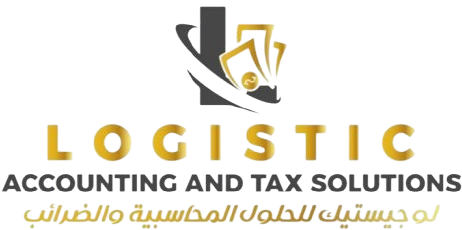

استشارات المخاطر

استشارات المخاطر
يعد التعامل مع المخاطر جزءًا لا يتجزأ من تحقيق النجاح التجاري في بيئة اليوم الديناميكية وغير المؤكدة. في لوجستيك، نقدم خدمات استشارات المخاطر الاستراتيجية لمساعدة المنظمات على تحديد المخاطر وتقييمها والتخفيف من حدتها بشكل فعال، مما يمكنها من اتخاذ قرارات مستنيرة وتحقيق أهدافها الاستراتيجية بثقة.
حلول شاملة لإدارة المخاطر
تغطي خدمات استشارات المخاطر الاستراتيجية لدينا مجموعة واسعة من الحلول المصممة خصيصًا لمعالجة مشهد المخاطر المتنوع الذي تواجهه المنظمات:
إدارة مخاطر المؤسسة (ERM): تساعد خدمات إدارة مخاطر المؤسسة لدينا المنظمات في تحديد المخاطر وتقييمها وإدارتها عبر جميع مستويات العمليات. نحن نعمل بشكل تعاوني مع عملائنا لتطوير أطر واستراتيجيات مخصصة لإدارة المخاطر تتماشى مع أهدافهم التجارية وقدرتهم على تحمل المخاطر. من خلال تنفيذ عمليات وضوابط قوية لإدارة المخاطر، نساعد المنظمات على إدارة المخاطر بشكل استباقي، واستغلال الفرص، وتعزيز مرونة الأعمال.
الامتثال التنظيمي والحوكمة: يعد البقاء متوافقًا مع المتطلبات التنظيمية أمرًا بالغ الأهمية للتخفيف من مخاطر الامتثال والحفاظ على ثقة أصحاب المصلحة. تساعد خدمات الامتثال التنظيمي والحوكمة لدينا المنظمات على التنقل في المشهد التنظيمي المعقد، وضمان الامتثال للقوانين واللوائح المعمول بها، وإنشاء هياكل حوكمة فعالة. من تقييمات الامتثال التنظيمي إلى التقارير التنظيمية وأفضل ممارسات الحوكمة المؤسسية، نقدم التوجيه والدعم الخبيرين لتحقيق التميز في الامتثال.
الأمن السيبراني وحماية البيانات: يعد حماية المعلومات الحساسة والوقاية من التهديدات السيبرانية أمرًا بالغ الأهمية للحفاظ على استمرارية الأعمال وحماية ثقة العملاء. تساعد خدمات الأمن السيبراني وحماية البيانات لدينا المنظمات في تقييم وضعها الأمني السيبراني، وتحديد نقاط الضعف، وتطوير استراتيجيات وضوابط قوية للأمن السيبراني. من إجراء تقييمات لمخاطر الأمن السيبراني إلى تنفيذ برامج الامتثال لحماية البيانات، نساعد المنظمات على تعزيز مرونتها الأمنية السيبرانية وحماية أصولها الأكثر قيمة.
استمرارية الأعمال والتعافي من الكوارث: يعد الاستعداد للتخفيف من تأثير الاضطرابات غير المتوقعة أمرًا ضروريًا للحفاظ على استمرارية العمليات وتقليل وقت تعطل الأعمال. تساعد خدمات استمرارية الأعمال والتعافي من الكوارث لدينا المنظمات على تطوير خطط استمرارية أعمال شاملة واستراتيجيات التعافي من الكوارث لضمان المرونة في مواجهة الشدائد. سواء كانت التخطيط للكوارث الطبيعية أو حوادث الأمن السيبراني أو غيرها من الأحداث المزعزعة للاستقرار، يعمل فريقنا مع المنظمات لتطوير خطط استمرارية مخصصة تحمي أعمالهم وأصحاب المصلحة.
+
00
عملاء راضون
+
00
سنوات من الخبرة
مستشارون موثوق بهم لاحتياجات إدارة المخاطر الخاصة بك
في لوجستيك، نحن أكثر من مجرد مستشارين - نحن مستشارون موثوق بهم مكرسون لنجاحك. يعمل فريقنا من المحترفين ذوي الخبرة بشكل وثيق مع المنظمات لفهم تحديات المخاطر الفريدة التي تواجهها وتطوير حلول مخصصة تلبي احتياجاتها المحددة. نحن ملتزمون بتقديم الدعم والتوجيه المستمرين، وتقديم المشورة والتوصيات الخبيرة لمساعدة المنظمات على التنقل في التحديات المالية واستغلال الفرص.


شركاؤك لتحقيق المرونة والنجاح
مع خدمات استشارات المخاطر الاستراتيجية من لوجستيك، يمكن للمنظمات تعزيز قدراتها في إدارة المخاطر، وتقليل نقاط الضعف، وتحقيق نمو مستدام. اتصل بنا اليوم لمعرفة المزيد حول كيف يمكن أن تفيد حلول إدارة المخاطر لدينا مؤسستك وتساعدك على تحقيق أهدافك الاستراتيجية بثقة.